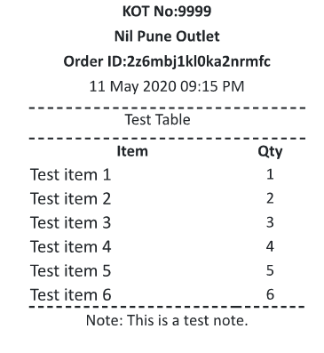
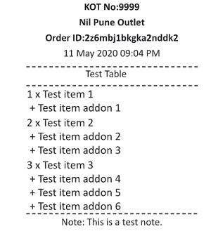

<div class="billformat-wrapper" id="billformat-wrapper-id">
  <link rel="stylesheet" href="../css/Billformat.css" />
  <label
    data-i18n="settingScreen.Formatting.KOTPrintFormat"
    class="printerTitles has-i18n"
    >KOT Print Format</label
  >
  <div class="kot-formatting-div">
    <label
      data-i18n="settingScreen.Formatting.selectElementToSetNewStylesHeading"
      class="printerTitles has-i18n"
      >Select Element To Set New Styles:</label
    >
    <div class="kot-format-elements-wrapper">
      <select name="" id="kotformatelementsList">
        <option
          data-i18n="settingScreen.Formatting.selectElementToSetNewStyles.selectElementHeading"
          class="has-i18n"
          disabled
          selected
          value
        >
          Select Element
        </option>
      </select>
      <select name="" id="kotformatelementpaperSizeid">
        <option
          data-i18n="settingScreen.Formatting.selectElementToSetNewStyles.selectElement.paperSizeHeading"
          class="has-i18n"
          disabled
          selected
          value
        >
          Paper Size
        </option>
        <option
          data-i18n="settingScreen.Formatting.selectElementToSetNewStyles.selectElement.paperSize._80mm"
          class="has-i18n"
          value="css_80mm"
        >
          80mm
        </option>
        <option
          data-i18n="settingScreen.Formatting.selectElementToSetNewStyles.selectElement.paperSize._58mm"
          class="has-i18n"
          value="css_58mm"
        >
          58mm
        </option>
      </select>
      <input
        type="text"
        data-i18n="[placeholder]settingScreen.Formatting.selectElementToSetNewStyles.selectElement.Size;[title]settingScreen.Formatting.selectElementToSetNewStyles.selectElement.defaultSize18For80mm16For58mm"
        class="has-i18n"
        id="kotformatelementSizeid"
        title="(Default Size:18 for 80mm,16 for 58mm)"
        placeholder="Size"
      />
      <select name="" id="kotformatelementFontstyleid">
        <option
          data-i18n="settingScreen.Formatting.selectElementToSetNewStyles.selectElement.fontStyleHeading"
          class="has-i18n"
          disabled
          selected
          value
        >
          Font Style
        </option>
        <option
          data-i18n="settingScreen.Formatting.selectElementToSetNewStyles.selectElement.fontStyle.Normal"
          class="has-i18n"
          font-weight="normal"
          value="normal"
        >
          Normal
        </option>
        <option
          data-i18n="settingScreen.Formatting.selectElementToSetNewStyles.selectElement.fontStyle.Bold"
          class="has-i18n"
          font-weight="bold"
          value="bold"
        >
          bold
        </option>
        <option
          data-i18n="settingScreen.Formatting.selectElementToSetNewStyles.selectElement.fontStyle.Italic"
          class="has-i18n"
          font-weight="normal"
          value="italic"
        >
          Italic
        </option>
      </select>
    </div>
  </div>

  <div class="prview-actions">
    <input
      data-i18n="[value]settingScreen.Formatting.selectElementToSetNewStyles.Update"
      class="has-i18n"
      type="button"
      value="Update"
      id="updateelementStyleid"
    />
    <button
      data-i18n="settingScreen.Formatting.selectElementToSetNewStyles.disableStyles"
      title="Disables the styles"
      class="normal-button has-i18n"
      id="disablekotstylesbutton"
    >
      Disable Styles
    </button>
    <button
      data-i18n="settingScreen.Formatting.selectElementToSetNewStyles.resetStyles"
      title="Warning:Removes all the styles"
      class="normal-button has-i18n"
      id="resetkotstylesbutton"
    >
      Reset Styles
    </button>
    <button
      data-i18n="settingScreen.Formatting.selectElementToSetNewStyles.testPrint"
      data-toggle="tooltip"
      title="Sends a test KOT print "
      class="normal-button has-i18n"
      id="openformatPreviewbutton"
    >
      Test Print
    </button>
    <input
      data-i18n="[value]settingScreen.Formatting.selectElementToSetNewStyles.viewStyles"
      class="has-i18n"
      type="button"
      value="View Styles"
      id="viewstylesbutton"
    />
  </div>

  <div class="kot-selection-preview-wrapper">
    <label
      data-i18n="settingScreen.Formatting.selectElementToSetNewStyles.selectKOTPrintFormat"
      class="printerTitles has-i18n"
      >Select KOT Print Format
    </label>
    <div class="row kot-selection-preview" id="kot-selection-preview-id">
      <div class="col-sm-6 kot-preview-format kot-view-format-1">
        
      </div>
      <div class="col-sm-6 kot-preview-format kot-view-format-2">
        
      </div>
    </div>
  </div>
  <!-- $('#kotpreviewBodyid').html() -->
</div>
<script>
  require('../js/BillformatController.js');
</script>
